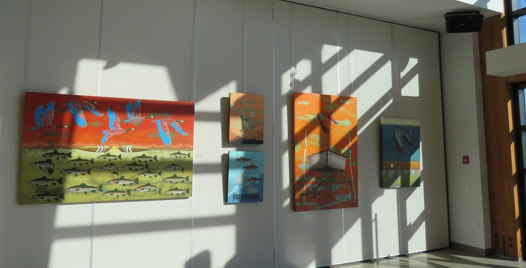
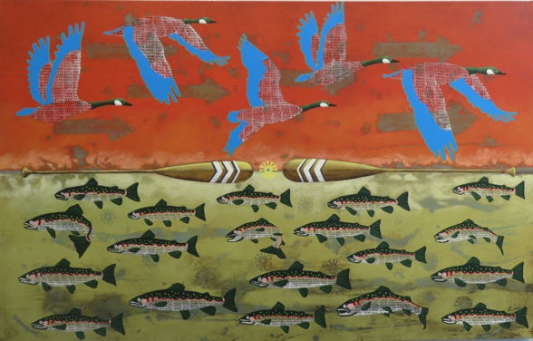
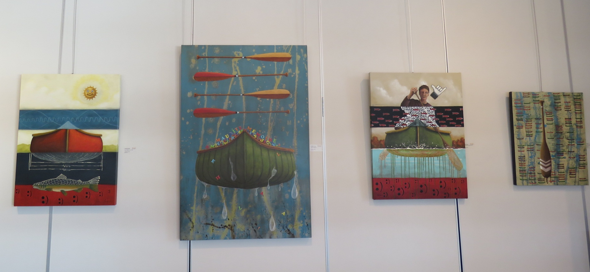

FRANÇOIS PERRAS
RAM & AUTRES AMALGAMES
Francois Perras peint depuis plus de 30 ans. Sa principale source d’inspiration est puisée à même la nature. Il en extrait une multitude d’éléments qui sont des prétextes pour synthétiser la forme, la couleur et le mouvement. Son approche artistique peut sembler formaliste mais le contenu sous-entend des réflexions sur l’interrelation entre nous et la multitude d’organismes vivants qui nous entourent.
En 2014, sa pratique artistique se transforme peu à peu au contact du cyberespace. Le World Wide Web (Web) avec sa bouillie d’ondes électromagnétiques, de réseautage et d’échange d’informations, devient pour lui une composante de la création. L’émotion qu’il cueille dans la nature est maintenant modulée par les chemins virtuels.
Avec RAM & AUTRES AMALGAMES, François Perras suggère que la mémoire et la vision de la réalité soient souvent biaisées parles écrans de nos appareils électroniques

Pour énoncer cela, il prend pour prémices une forme de mémoire informatique que l’on nomme RAM. L’acronyme signifie «Random Access Memory» ou «mémoire vive» en français. Traduit librement, «l’accès aléatoire à la mémoire» devient pour lui un lieu propice de rencontre entre les états fictifs de l’informatique et les repères tangibles de la réalité.
La forme que l’artiste privilégie pour illustrer cette conjonction, joue sur la sémantique des mots et sur les interprétations picturales. Ainsi le RAM devient le prolongement moderne de la rame comme représentation de la transmission des données et des informations. De la même façon, le canot traditionnel évoque les canaux de communication.


L’exposition navigue pour ainsi dire entre deux eaux. Dans le nouveau paradigme numérique, elle explore l’ambiguïté de l’apport de la réalité virtuelle sur notre perception du monde. Car l’omniprésence du web, inscrit maintenant notre mémoire individuelle dans une mémoire collective planétaire.
Par une approche métaphorique et symbolique, ses tableaux présentent l’enchevêtrement aléatoire d’éléments réels et factices. Ils deviennent des hyperliens incongrus.
Icônes numériques, plantes, animaux, bestioles, s’amalgament et s’imbriquent de plus en plus dans les œuvres de l’artiste pour exprimer la métamorphose de notre monde.


François Perras artiste et Johanne Martel commissaire de l'exposition